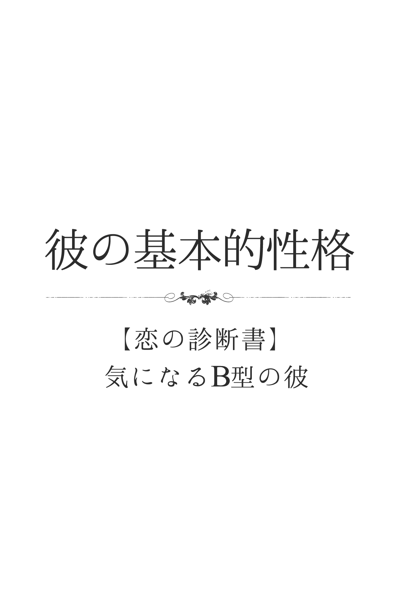
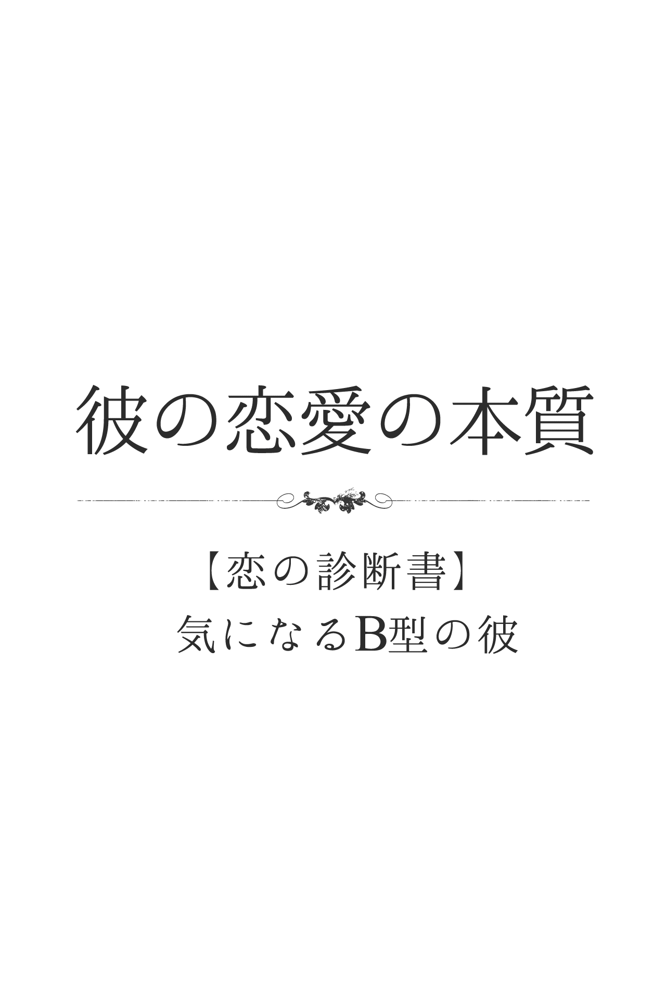
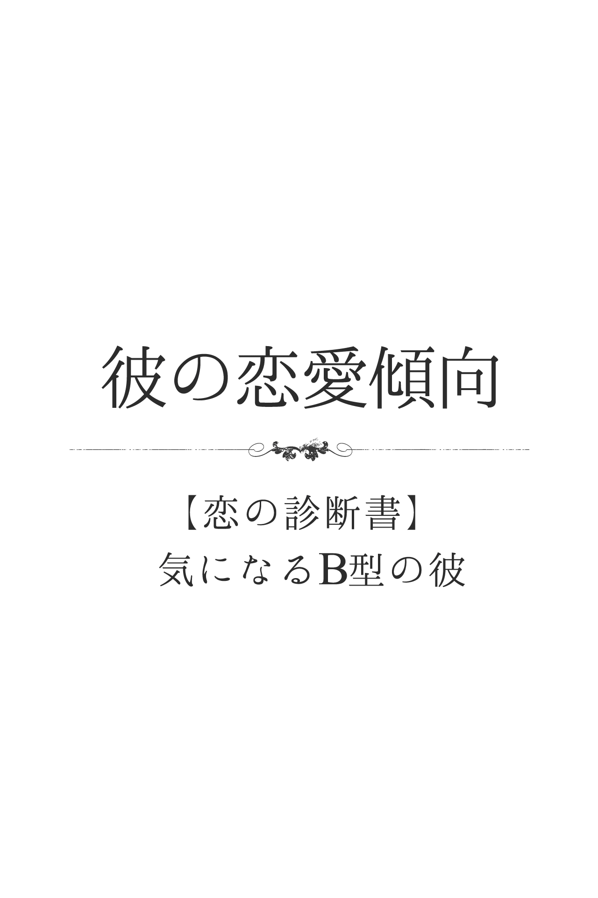
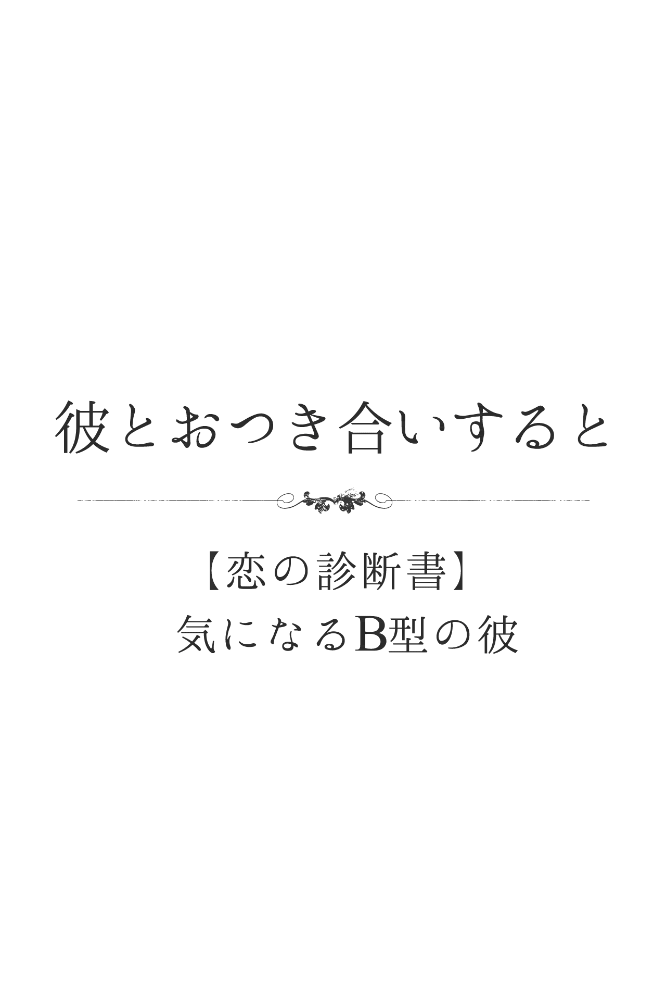
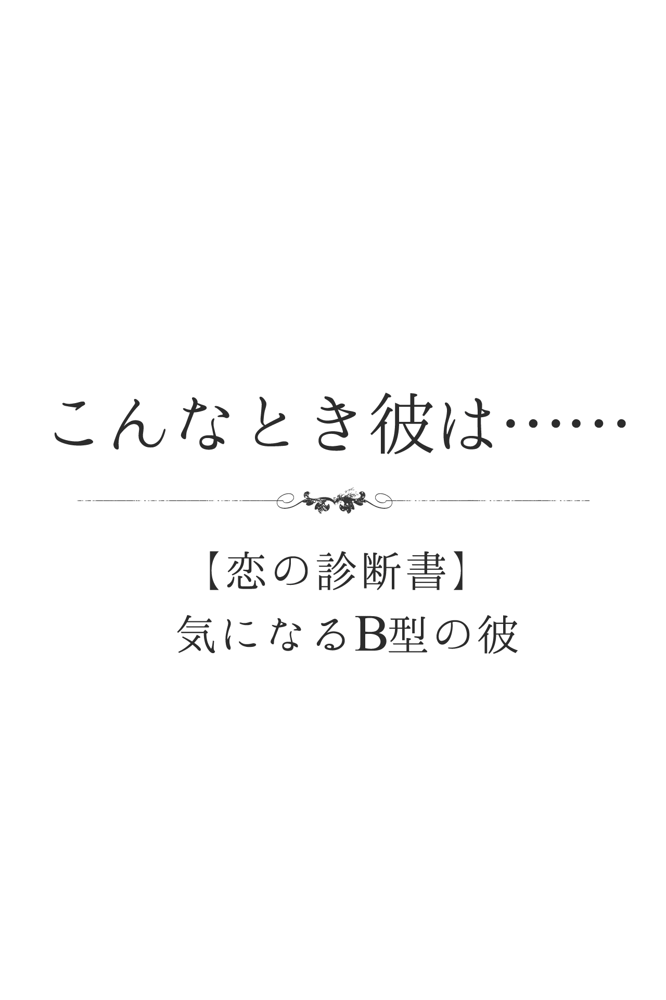
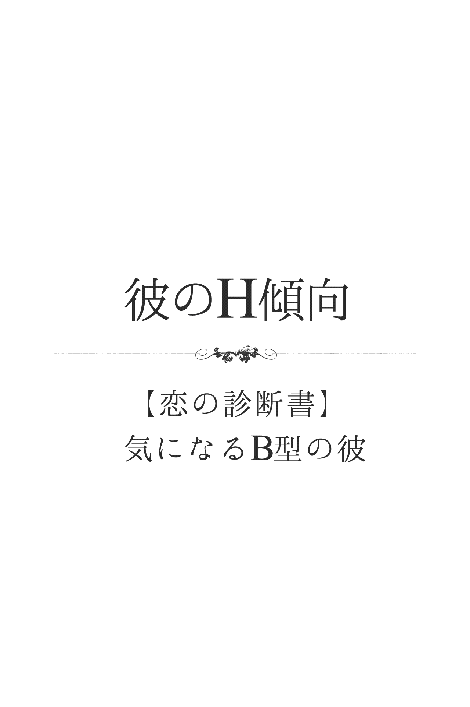
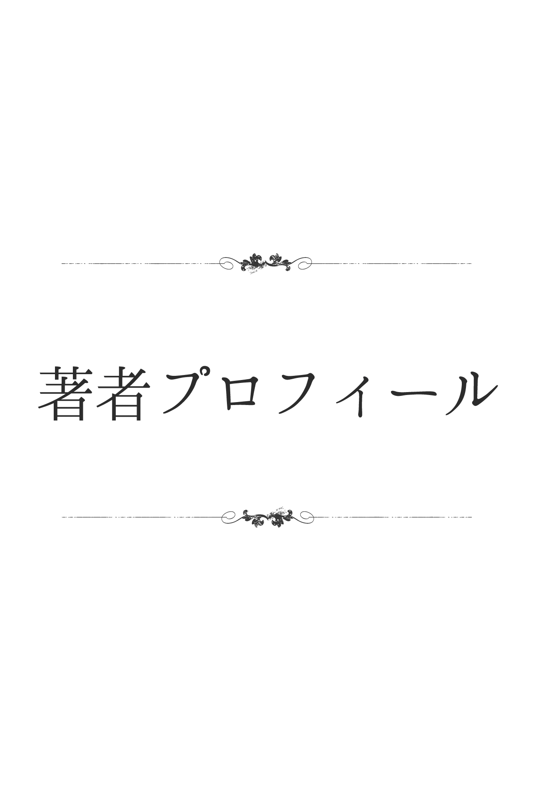
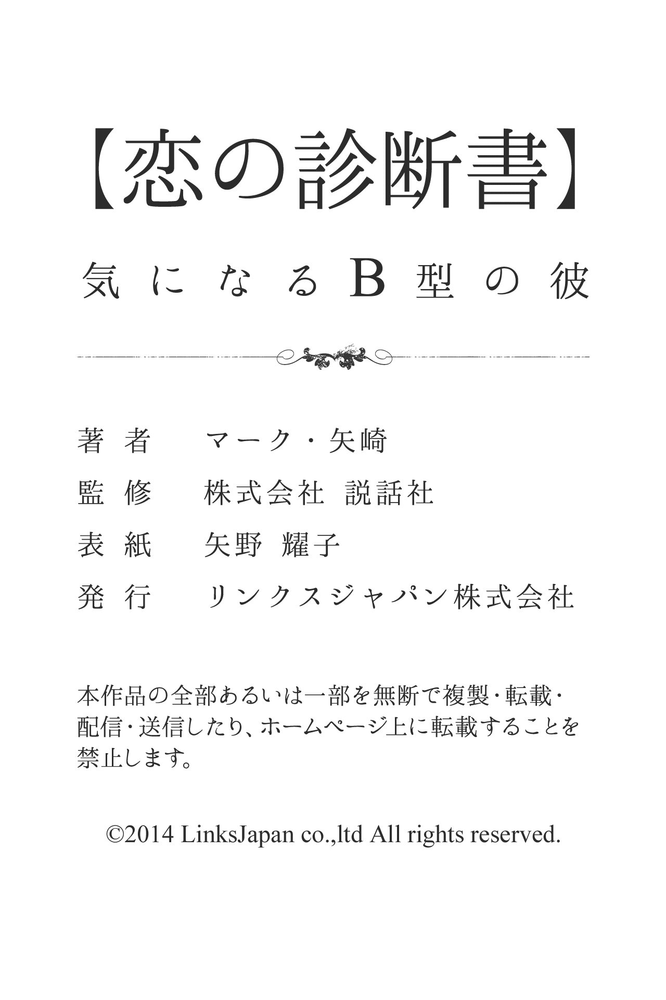

| 【恋の診断書】気になるＢ型の彼 (得トク文庫) | |
| マーク・矢崎 | |
| (2015) | |
1 、はじめに
世の中には、たくさんの占いや診断があります。中でも「血液型診断」は、合コンや飲み会、仕事場や友だち同士の間でも、事あるごとに話題に上るのではないでしょうか。その人の何気ないひと言や行動から「あーＢ型っぽい！」「やっぱり、Ａ型だからねー」なんて口にしたことが、あなた自身、何回かあるのでは？ あなたが好きな男性、あるいは彼氏は何型ですか？ すでに、今の段階で性格と血液型を照らし合わせて、相手のことを何となく判断しているかもしれませんね。恋を上手に進展させていくためには、やはり相手をよく理解し、それに合ったアクションを起こしていくことが大切です。そのひとつの目安やヒントとして「血液型診断」を活用するのは、とても有効的だと思います。この本には、基本的な性格はもちろん、さまざまなシチュエーションを想定した診断を詰め込んでおきました。その中には、きっとあなたが知りたかった項目があるはずです。あなた自身が楽しみながら、そして、ふたりの恋がよりハッピーな展開を迎えられるために、この本が少しでもお役に立てたら幸いです。
2 、彼の基本的性格
彼って、いったいどんな人？
いつも明るく元気で、目立つことが大好きな彼。好奇心が旺盛で、考えるよりも前に動き出すのが特徴です。そのため、ときにスタンドプレイに走ることがあります。また、自分がアピールしたことがウケると、ますますサービス精神を発揮するお調子者なところがあり、周囲がうんざりしていることに気がつかないことも......。自由奔放で空気を読めないところはあるものの、そんなことを気にせず自由にのびのびと動き回るのが、Ｂ型の大きな魅力でしょう。
彼は、自意識過剰なタイプ？
彼は、かなり自意識過剰といっていいでしょう。ただし、それは「根拠のない自信」であることも少なくありません。Ｂ型のモットーは「自分ならできるはず！」なのです。何事に関しても、積極的に飛び込んでいき、成果を上げることに全力を注いでいきます。そこに「失敗」という概念はなく、ひたすら「成功」のみを求め突き進んでいくでしょう。たとえ成果が得られず、落ち込んだとしても、すぐに気持ちを切り替え忘れてしまうのもＢ型のスゴイところ。
彼は、第一印象で損するほう？
彼は、第一印象で損することが少なくないでしょう。初対面からざっくばらんに接していき、楽しい雰囲気にしようとするＢ型。明るく積極的に話しかけ、身振り手振りを交えて、どんどん場を盛り上げていきますから、相手に鮮烈な印象を与えます。ただ、接し方が一方的になりがちで、自分のことばかりしゃべりすぎたり、あちこち落ち着きなく動き回ったりしてしまうため、最初は好印象を与えるものの、時間の経過とともに右肩下がりになる傾向が......。
彼は、甘え上手？
自分の気持ちに正直な彼は、とても甘え上手。本人は甘える気持ちはなくても、素直に「これ手伝ってくれない？」と言葉に出すことができるのです。しかも、物事を人に頼んでおきながら、自分は別の案件に着手したり、時にはサボったりする要領のいいところも。また、日頃から甘えられる人とそうでない相手を感じとっているので、甘えていく対象は決まっています。何かあると、すぐにその人の顔が思い浮かび、相手の都合などおかまいなしに甘えるでしょう。
彼は、社交性が高いほう？
男女の性別はもちろん、相手がどんな人であろうとも物怖じせずに接することができる、とても社交性の高い彼。元気に明るく、ハッキリとした口調であいさつを交わしたかと思うと、あっという間に自分のペースに巻き込んでいきます。初対面でも、積極的に話しかけていけますし、どんどん話を弾ませ場を盛り上げていく社交性は天下一品です。時には、周囲が制止するのを振り切ってまで、興味や関心をもった相手に接近していくこともあるでしょう。
彼は、新しいもの好きなタイプ？
根っから好奇心が旺盛で、常に新しいものを求めている彼。その対象の良し悪しや、自分にとって有益なものであるかは二の次で、とにかく一度手にしないと気が済みません。「面白そう！」「こんなの初めて見た！」という衝動に突き動かされ、すぐ行動に移していくはずです。ただ、手に入れたものが、結局つまらないものだったり、自分にふさわしくなかったりすると、すぐに飽きてしまうのも特徴。同時に、もう別の対象へと興味や関心が向いているでしょう。
彼は、プライドが高いほう？
彼は、個性的でマイペースなタイプ。自分が「それでいい」と思えば、周りがどれだけ優れていたとしても、まったく意に介しません。もともと、自分と人を比べる意識が希薄で「こうでなければ！」というこだわりもほとんど持ち合わせないため、プライドは低めといえそう。ただし、自分が興味を抱いた事柄に関してだけは「負けてたまるか」「絶対手に入れる」と、ライバル心むき出しで取り組むことはあるでしょう。しかし、事が終われば、何事もなかったように平常に戻ります。
彼は、人と自分を比較して落胆しやすいタイプ？
彼は、人と自分を比較して落胆することは、ほとんどないでしょう。基本的に「人は人、自分は自分」と思っているＢ型は、やりたいことをどんどん実行に移し、言いたいことを口にして、人と比べることなどしません。そんなＢ型が、他人を意識するのは、一種の競争や勝負の場面のみ。でも、結果はどうあれ、さほど落ち込むこともなさそう。ただし、自分のミスや失敗で勝てる勝負に勝てなかった場合は、一瞬ですがひどく落胆することはあるようです。
彼は単純？複雑？
そのときの感情やノリで、どんどん行動してしまう彼。顔を合わせるたび、毎回違う反応を示したりするので、とても複雑怪奇に感じられるタイプです。ノリのいいときはまだましなのですが、ご機嫌ナナメとなると、もう手をつけられない状態になる可能性が大。しかし、根は案外、単純なところもありそうです。まずはチヤホヤしてあげると、いい気分になりますから、大いにほめてあげましょう。反面、機嫌の良くないときは近づかないのが一番。ただし、彼のほうからちょっかいを出してきたら、かまってもらいたいというサインですから、相手をしてあげましょう。
彼は積極的？それとも不器用な男？
自分の気持ちや感情を隠すことなく、そのままストレートに出してくる彼。まさに積極的なタイプといえるでしょう。ただし彼の場合は、後先を考えず、その場のノリで行動してしまうため、多分に衝動的でもあります。特に、恋愛シーンにおいては、相手の思惑や状況などに注意を払うような気づかいができないため、アプローチしても女性のほうが引いてしまうケースが少なくありません。その点では、不器用男の代表格でしょう。根は単純で、愛する女性に自分の燃える想いを伝えたいだけなのです。
彼は直球派？変化球派？
とにかくストレートな言い方や行動が得意な彼。まさに直球派の代表男です。しかも彼の場合は、気になる女性ができると、彼女めがけてグイグイと速球で押していくでしょう。そのアプローチは、実に素早く、賞賛に値するほどの激しい情熱を宿しています。ただし、たまにはまともに当たりすぎて、デッドボールとなり、女性のほうが引いてしまうこともありそう。そんな失敗があったとしても、彼が懲りることはないでしょう。もちろん、変化球を投げることなど、考えてもいないのが彼なのです。
彼は、ウラオモテがある人？
彼は、感情的で感覚的なタイプ。本来、ウラオモテはあまりなく、単純で単細胞の男性です。ただし、そのときの気分やノリによって、一緒にいて最高に楽しい男性と感じられるときもあれば、融通が利かない困った人になってしまうこともあるのです。そのため、ウラオモテがあるように見えてしまいがちでしょう。そのため、彼とつき合うためには、多少の忍耐が必要になってきます。あなたの手のひらの上で転がせることができて、しかも彼自身は自分が主導権をにぎっていると感じられれば、しめたものです。
彼に秘められた性格的な長所とウィークポイント
彼は目立つことが大好きです。時にはスタンドプレイに走ることもありますが、自分をアピールしたことがウケたりすると、とたんにうれしくなって、ますますウケ狙いでサービス精神を発揮するでしょう。そんな彼は、皆にとって楽しい最高に存在と映るはず。この点は長所であり、皆も楽しく彼も楽しく感じる、ダブルの喜びです。とはいえ、ノリすぎて周囲はうんざりしているのに、ちっとも気がつかない彼もいます。空気を読めない点は、やはり大きなウィークポイントといえるでしょう。
彼の喜怒哀楽
彼は感情のアップダウンがかなり激しいタイプです。ただし、いつもストレートに、その感情や気持ちを出すわけではありません。心の中では怒りが渦を巻いているのに、なぜか冷静な顔をしていたりすることもあるのです。そのため、パッと見ただけで、彼の感情を憶測するのは慎んだほうが賢明です。とはいえ、強い感情を抱いた場合は、何らかの形で表現するでしょう。その場では何も言わなくても、別の友人に不満をぶちまけたり、無言でその場を去ったりします。逆に、ひとりになると、にやけたりするのは、喜んでいる証拠です。
ジキルとハイド、彼の二面性は？
彼は、周囲の思惑などまるで気にかけないで、自由気ままに行動するタイプです。言いたいことを口にしたり、やりたいように行動したりするでしょう。そのため、基本的に二面性はないといえます。なぜなら、自分の欲求を抑える必要がないから。また、ユニークさにかけては、天下一品の彼ですから、どんなに長くつき合っても、驚かされたり笑わされたりすることが多いでしょう。「どこからそんな発想が出てくるの？」と感じることも、しばしばのはず。その意味では、永遠に謎に包まれた男性といえるかもしれません。
彼が傷つくひと言は？
彼が傷つくひと言は「単純な人」だと言われることでしょう。というのも、彼は自分がいろんな面をもっている、複雑な性格の持ち主だと思っているからです。アクティブに動き回るけれど、気が向かないと家に閉じこもったりして、何にでも首を突っ込んでみたがる好奇心旺盛なところもあれば、議論好きな一面ももっている、そんな自分が「単純な人」だと言われることなんて、ありえないことなのでしょう。そして、ショックを受けると同時に、そう言った相手こそ「人の心の複雑さがわからない奴だ」と決めつけます。
彼が喜ぶほめ言葉は？
彼が喜ぶほめ言葉があるとすれば「とても個性的な人だね」という言葉です。彼は、自分の思った通りに行動したり、発言するタイプ。感情的で、わがままな性格の持ち主といえ、周囲に自分を合わせようという配慮に欠けている面もあります。そんな自分を、彼は個性的だと思っているのです。したがって「とても個性的な人だね」と言われることほど、彼にとってうれしいことはありません。単なるわがままだと思われがちなことを、個性として受け取ってもらえたと感じ、大満足するでしょう。
３ 、彼の恋愛の本質
彼の恋愛思考回路
熱しにくく、冷めにくい彼。惚れっぽいことは確かで、しょっちゅう「いいな」と思う女の子を見つけますが、何かアクションを起こすまでには至りません。気に入っても、そのまま、忘れてしまうことがほとんど。しかし、まれに想いが継続すると、もうその相手しか目に入らなくなるでしょう。かといって、ヨソ見をしないかと言えば、そうでもないから、本心が非常にわかりにくいようです。ひと言で表すなら、偏愛主義。好きな子のことは、猫可愛がりするのが特徴といえます。
彼の愛のカタチ
好きになったとたん、どんどん押して押しまくるというのが、彼の愛のカタチです。相手の気持ちや状況には、一切無頓着。すでに、相手にステディな恋人がいても、彼は気にも留めないでしょう。むしろ「その男から奪い取ってやる！」とファイトを燃やすタイプでしょう。さらに、相手へどんなにアプローチしても振り向かないとなると、ある日突然、愛が冷めてしまうのも彼。あれほど愛していたのが不思議に感じられる素っ気なさです。逆に、見事に恋が実った場合も、突然の心変わりをすることも少なくありません。
彼が、恋人を選ぶときの３大条件
彼が恋人を選ぶときの条件の第一は、ざっくばらんで朗らかな女性であることです。無理して気をつかわなくて済むような、楽しくおおらかな恋人が理想だと思っています。
第二の条件は、自分の意志や意見をしっかりともっている女性であること。言葉少なく、じっと我慢しているような、おとなしい女性では長続きが難しいでしょう。たとえ、ケンカをすることがあっても、自己主張のできる恋人を望んでいます。
そして第三の条件は、自立していること。仕事や趣味で忙しくて、会えない日が続いて放っておくことになっても、自分なりに楽しんでくれる恋人が最高だと思っているのです。
彼は、ロマンチスト？
いつも明るくエネルギッシュな彼なので、一見、ロマンチストには見えないかもしれません。楽しいことや刺激的なことが大好きな彼ですが、その裏にいつも「人を喜ばせたい」という気持ちをもっているのです。そのため、好きな人のためなら、いろんなデートコースを考えたり、雰囲気の良いお店や場所を一生懸命選んだりします。また、基本的にスケールの大きなことが好きで、壮大な夢や目標を抱いて人生を歩んでいく姿は、まさにロマンチストといっていいでしょう。
彼は、女性に本音を言わないほう？
異性に対して彼は、本音を出すほうでしょう。むしろ「口が滑ってしまう」といったほうが正しいかも。その場の感情で発言したり、行動を起こしたりしがちなＢ型なので、盛り上げようという気持ちが先走って、胸に秘めた想いまで口に出してしまうことがあります。また、楽しい雰囲気の中で、冗談交じりに本音をはさんでくることも多いようです。異性からすると、お調子者に見えるＢ型ですが、きちんと言葉に耳を傾けてみると、意外なほど本心をさらけ出していることが少なくないでしょう。
彼は、女友だちを「オンナ」として意識している？
恋愛をゲーム感覚で考えるＢ型は、よほど好みではないタイプである場合は別ですが、知り合う女性のすべてを「オンナ」として見ているといっても過言ではないでしょう。そもそも、女性に対して好奇心が旺盛で、初対面のときから「この女性はいったいどんな性格なんだろう」「楽しませてくれる人かな？」と興味津々なのです。特に、露出の多い派手なファッションの女友だちは、恋人候補というより性の対象として見ることが多く、隙あらばモーションをかけようとします。
彼は、好きな相手に冷たくしてしまうタイプ？
言いたいことを言い、やりたいことをする彼は、結果的に好きな人に冷たくしていることが少なくないでしょう。たとえば、相手の気持ちや都合を考えず、率直にものの好き嫌いを口にしたり、好きな人を放っておいて他の相手と親しくしたりすることが多いのです。しかも、本人にはまったく悪気がありません。事情を知っても「何だ、そんなことで悩んでいたの？」と、あっけらかんとしているため、相手からするとよけいにつらさを感じてしまうようです。また、時にツンデレになることもあるでしょう。
彼は、女性をソノ気にさせるのがうまい？
自分の感情や衝動をストレートに表す彼は、素直な気持ちを言葉にできるので、口説き落とすのが上手。ちょっぴり危険な香りが漂い、強引なところもありますが、そんな彼に魅力を感じる異性は多いでしょう。また、明るく楽しい雰囲気づくりも得意で、あまり警戒心を与えず、勢いのまま思わず相手に「うん」と言わせてしまうこともあります。ただ、積極果敢である反面、かなりマイペースですから、相手への気づかいに乏しいのは否めないかも。
彼は、恋に事欠かないタイプ？
興味や関心のある対象を見つけると、即座に行動に移す彼。恋愛に関しても、気に入った相手を見つければ、たとえ自分に恋人がいても声をかけていきます。ある意味、ひと目惚れ体質なので、恋に事欠くことはないでしょう。また、恋愛自体をゲーム感覚のように考え、相手を口説き落としてしまうと、とたんに熱が冷めてしまうことが少なくありません。そのため、交際期間は短めになりますが、相手は次から次へと代わっていっても、恋が絶えることがなさそうです。
彼は、女性の頼み事を断れないタイプ？
自分の好きなように行動したり発言したりする彼は、女性からの頼み事であっても、都合が悪ければあっさり断ることができます。特に、興味や関心のないタイプや好みではない相手の頼み事は、あからさまに拒絶することがあるでしょう。ただし、そのときの気分次第で快く承諾することもありますから、常に冷たいわけではありません。また「あなたにしかお願いできないの」と懇願されると、まんざらでもない気分になり、つい引き受けてしまうこともあるようです。
彼は、何とも思っていない相手から告白されることが多いタイプ？
いつも明るく、パワフルに動き回っている彼。どこに身を置いても、その場を盛り上げて楽しい雰囲気にしてしまいます。そんな彼に憧れ、魅了される人は多いでしょう。しかも、人の感情の動きに無頓着なところがあるので、相手に好意を抱かれているのに気がつかないことが少なくありません。ただし、言いたいことを言い、やりたいことをやる彼は好き嫌いがハッキリしていますので、告白されても相手に興味や関心がない場合、きっぱり断ります。
彼が気になる相手にする態度
彼は、気になる相手に対して、つい偉そうに振る舞ってしまう傾向があるでしょう。上から目線の話し方になったり、自分の自慢話ばかりしたりして、アピールが度を越してしまいがち。「相手に気に入られたい」「注目してほしい」という強い想いが、派手な振る舞いや大胆な発言になりやすいのです。そのため、かえって相手に悪い印象を残しやすいのも、彼の特徴といっていいかも。しかも、それでもめげずにアタックしていくのは、さすがです。
彼が嫌いな相手に接する態度
感覚的で、マイペースな彼は、誰に対しても素直な感情を表に出します。嫌いな相手であれば、露骨に斜に構えたり、気に入らない部分をストレートに指摘したりするでしょう。また、相手から話しかけられても聞こえないフリをしたり、さっと場を離れたりして、なるべくかかわらないよう明確に避ける態度を見せることも。大勢の仲間と一緒の場合などは、嫌いな相手に一切話しかけず、その場に相手がいないかのように振る舞う、徹底さを貫くこともあるでしょう。
彼にとって恋人と結婚相手は別？
彼にとって、恋人と結婚相手は基本的には同じものでしょう。好みの相手を見かけると、一瞬のうちにカーッとのぼせ上がり恋に落ちてしまう彼。「好き、愛してる、結婚したい」というストレートな気持ちで、アプローチを開始します。好きになるときは、いつだって結婚まで意識するようです。とはいえ、うまく交際にこぎつけたとしても、結婚にふさわしい相手である可能性は、むしろ低い可能性が。つき合って「この人はダメかも」という不安がもたげてくると、急激に愛情も冷めてしまい、次の恋人探しに精を出すことになります。
彼の｢好き避け｣と｢嫌い避け｣は、こんなふうに違う
彼は感覚的でマイペースなタイプ。周囲への思惑などおかまいなしに、自分の気持ちや感情のままに突っ走ってしまいます。基本的に、好きな女性に対してはストレートに当たっていくので｢好き避け」することはあまりないでしょう。とはいえ、相手をじらしてみようといった恋のテクニックのつもりで、わざと｢好き避け」を装うことはあるようです。ただ彼の場合、見え見えだったりすることが多いでしょう。｢嫌い避け」は、ごく普通にやってしまいます。嫌いな相手に、わざわざ話しかけたりしないのが、彼という男性なのです。
彼には、不倫願望はある？
彼に不倫願望があるかといえば、答えはYES でしょう。なぜなら、彼は一般的な社会通念とは無縁のタイプであり、自分こそがルールだという、強い自我と個性の持ち主だから。基本的に、相手や自分にパートナーがいようと、恋をしてしまったら仕方がないと思っています。「理性なんかでは制御できないからこそ恋愛は面白い」というのが、彼の本音なのです。とはいえ、相手の女性が悩みに打ちひしがれてしまうようでは、面倒なだけ。逆に、彼以上に相手の女性も破天荒なタイプなら、思いきって関係を楽しむに違いありません。
彼の同性愛思考は？
彼に同性愛の嗜好があるかどうかと問うなら、あまりないほうだといえるでしょう。彼は基本的に、女性が大好きで、好みの相手を口説き落とすことしか興味がないタイプだから。とはいえ、同性愛に対しての偏見も、彼にはまったくありません。別に、同性愛の友人がいたからといって、色眼鏡で見たりすることは決してないでしょう。そして、もしもその同性が異性以上に魅力的に見える瞬間が訪れたとしたら、ついフラフラっとなってしまうケースがあるかも。もっとも、一瞬の気の迷いで終わる可能性が高いでしょうが。
4 、彼の恋愛傾向
片想いをしているときの彼は？
片想いという言葉が、もっとも不似合いなのは、彼。好きになるというより、気に入ったら考えなしに突き進むので、恋の助走期間はほとんどないでしょう。あえて言うなら、フラれたあとに、それでもしつこくつきまとっている状態を片想いと呼べるかも？ どんなにハッキリ断られても、あきらめがつかない間は、どこまでも食い下がるようです。たまに相手が根負けし、ハッピーエンドを勝ち取ることもあるからあなどれません。
彼の気持ちと言葉と行動の一致度
彼の場合は、そのときによって、一致度が変わるタイプ。あるときは気持ちが先走ってしまったり、あるときは言葉が多すぎて饒舌になったりします。また、別のときには、行動ばかりが目立ってしまい、気持ちや言葉が追いついていかないように見えたりすることも。そんな彼は、気持ちと言葉と行動の３つのうちの何かひとつが、過剰になったりオーバーヒートしてしまう傾向があります。それだけパワフルな男性だともいえますが、心と行動のバランスの取り方は決してうまくはないでしょう。
彼は、告白したいほう？されたいほう？
彼は自分の感情や気持ちをストレートに表してしまうタイプ。相手への気づかいなど、ほとんど考えることはないでしょう。そのため、好きになれば、どんどんアプローチしまくり、愛の告白も自分からしていきます。相手からの告白を待つなんて余裕は、彼にはないのです。ただ、相手が自分に好意を感じてくれているかどうか、また相手のことをよくわからずにいる状態で、熱烈アプローチや告白をすることもあり、あえなく玉砕することも少なくないでしょう。
彼が恋に落ちる瞬間
彼には、天邪鬼な一面があります。そのため、正攻法のアプローチをしても、なかなか落とせないタイプ。むしろ、一見、自分に興味がなさそうだったり、敵対しているような女性が、実はそうではなかった場合、恋に落ちる可能性が高いでしょう。たとえば、何かと彼の意見に反対して、突っかかってくる女性がいると、ムッとしながらも気になってしまうのです。そんな彼女と、たまたま一緒に飲んで話してみたら、案外いい子で、しかも自分に気があるように感じられたとき、すっかりその女性の虜になってしまうでしょう。
彼の恥ずかしがりや度
彼は、個性的でマイペースなタイプ。自分が正しいと思ったら、周囲の反対を押し切ってでも、がむしゃらに進んでいきます。周囲に同調しようという気持ちは少なく、自分と人を比べたりすることもないようです。したがって、基本的には恥ずかしがりやとはいえないでしょう。ただし、そんな彼でも、たまには恥ずかしがることもあります。たとえば、愛する女性に対して、自分の存在を思いきりアピールしようとして、逆に恰好悪いところをさらしてしまったとき。さすがの彼も、真顔ではいられず、そそくさとその場から退散するでしょう。
素直に言えない彼の｢実はかまってほしい｣サイン
彼は、ちょっとひねくれたところがあります。さびしそうな目で見つめてくるから｢実はかまってほしい」のかなと思って、声をかけたり遊びに誘ったりすると｢いや、俺は行かない｣と返事をしたりするタイプ。とはいえ、一緒にいたがるということは、何らかの形で自分の存在を認めてほしかったり、ともに行動したいと思っている証拠。ですから、断られたり無視されても気にしないで、どんどん誘ってあげたり、声をかけてあげるといいでしょう。また、突然、プイと立ち去ってしまおうとするときも要注意。これは間違いなく｢かまってくれ！｣サインす。
好きな娘の前で格好つける彼の典型的行動
"彼は、明るく開放的で、自分の気持ちを素直に表すタイプ。したがって、格好つけたいと思うと、即行動に移すでしょう。たとえば、彼が急におしゃれに気をつかい始めたり、ヘアスタイルを変えてきたりするのは、間違いなく好きな娘ができたから。何気なく髪をかきあげて見せたり、足を組んで見せたり、斜に構えて座ってみたりするのも、格好つけているのです。あまりにステレオタイプすぎますが、それだけピュアな性格の持ち主だといえるでしょう。彼が好きなら、間違っても茶化したり笑ったりしてはいけません。
｢好きな相手｣と｢何とも思ってない相手｣との彼の電話傾向
彼は、かなりの気分屋で、そのときの気分によって対応が変わります。｢何とも思っていない相手」からの電話であったとしても、自分が話したいと思えば、ベラベラしゃべってしまうこともあるでしょう。逆に｢好きな相手」からかかってきても、多忙だったり他のことに気をとられていたりすれば「ごめん。今、ちょっと忙しいんだ」と、あっさり切ってしまったりします。とはいえ、好きでも何ともない女性に対しては、用事があるときしか電話をしないでしょう。何かうれしいことがあったりして、気分が高揚しているときは、まず好きな相手に電話するはず。ただし、自分のことだけ話しまくって切ったりしがちですが......。
｢好きな相手｣と｢何とも思ってない相手｣との彼のメール傾向
彼は個性的で、自分の意見や感情をハッキリ表に出すタイプ。そのため｢好きな相手」に対するメールと「何とも思っていない相手」へのメールは、基本的にまったく別物と考えています。｢好きな相手」には、凝った文面にしたり、写真を貼り付けたり、デコメや絵文字を多用したりと、いろいろと工夫するでしょう。返事も即返します。これに対して｢何とも思っていない相手」には、実にシンプルな文面になりがちです。とはいえ、個性派の彼ですから、自分を印象付けようという下心は多少あります。そのため、風変わりな署名を入れたりするケースはあるでしょう。
彼は、遠距離恋愛をクリアできる？
彼は衝動的で、その場の思いつきで行動してしまうタイプ。会いたいと思えば、夜中でも平気で訪ねてくるような男性です。会いたい衝動を満足させるためには、ある程度、近くに住んでいる必要があり、遠距離恋愛はまったく不向きといえるでしょう。「定期的に連絡を取り合う」といったルールを決めても、なかなか守ることはできない人なのです。それは、他のことに夢中になると、彼女の存在など忘れてしまうから。そんな彼と遠距離恋愛をしなければならなくなったら、よほどの覚悟が必要です。遠距離でうまくやっていける期間は、せいぜい半年と見たほうが賢明かも。
彼が好きになる女性のタイプ
彼が好きになるのは、個性的なタイプの女性です。皆と意見が違っても、自分の意見を堂々と述べることができるような闊達なタイプで、好奇心旺盛な女性が好み。他の女性は、やらないような趣味に凝っていたりするタイプにも興味を惹かれます。というのも、彼もまた周囲のことなどおかまいなしで、自分のやりたいように行動してしまうタイプだから。そのため、普通のおとなしい女性には目もくれず、個性的でちょっと変わり者の女性に、グングンと惹かれていくでしょう。
彼が弱いアプローチ
彼が弱いアプローチは、大胆なアプローチをされたり、サプライズな愛の告白をされるというものです。たとえば、皆がいる前で「あなたのことが好きなの」と言われたりすると、その場では無表情を装っても、心の中ではドキドキしてしまうはず。また、友人に協力してもらって彼を占ってあげ「三日後に運命が変わる」なんて告げてもらい、三日目に愛の告白をする......なんてサプライズも効果がありそう。というのも、彼はかなりの変わり者で、ありふれていないアプローチや告白に、ビビッとときめくタイプだからです。
彼の気持ちをガッチリつかむひと言
彼は、自分の思った通りに行動しないと気の済まない、わがままなタイプ。自分でも変なところがいっぱいあると思っていて、その個性や変人ぶりを認められると、結構うれしくなる様子。したがって、彼のハートにビビッと響くようなセリフは「あなたって変な人だけど、なぜか惹かれてしまうのよね」といったひと言です。「変なところが好き」というのも、効果的なセリフでしょう。こう言われれば「この子とは気が合いそうだし、うまくつき合っていけそうだ」と感じてしまう彼なのです。
彼が気づかない、恋の駆け引きとは？
彼にちっとも伝わらない恋のかけ引きは、自分がいかにモテモテかをアピールしてみる、といったものでしょう。というのは、彼はとても負けず嫌いのタイプで、たとえ相手が異性であろうと、打ち負かしたいと思ってしまうから。そのため「へえ、モテモテなの？ とてもそんなふうには見えないけど......」と、憎まれ口を叩かれるのがオチでしょう。また、たとえ心の中では、その女性を魅力的に感じることがあったとしても「絶対、この女だけには好きにならないぞ！」と固く誓ってしまう、へそ曲がり人間でもあるのです。
彼の恋愛経験は多い？少ない？
彼の恋愛経験は、わりと多いほうでしょう。というのは、彼はそのときの気分で恋をしてしまうタイプだから。恋愛気分を味わいたいがために、それほど好きでもない女性にアプローチを仕掛けてみたり、口説き落とそうとしてしまうこともあります。そして、その気分屋ぶりが交際中に出てしまうと、ごくささいないことで、恋人のことが嫌いになってしまったりすることがあるでしょう。この熱しやすく冷めやすい傾向のため、必然的に恋愛経験が多くなりがちなのが、彼なのです。
彼の過去の恋愛における特徴とは？
彼が過去に経験してきた恋愛の特徴は「愛してもらいたい、という気持ちばかりが強かった」ということ。彼は、自分のやりたいことをして、言いたいことを言うタイプ。基本的に自己中心的で、わがままな人間なのです。好きな人ができれば、迷わず積極的にアプローチするので、恋人関係にこぎ着くことはできたでしょう。でも、いつも相手に自分の要求ばかり押しつけたのは否めません。「愛してもらいたい」という気持ちばかりが強く「相手を理解しよう」とか「尽くしてあげたい」という気持ちは、ほとんどなかったことでしょう。
5 、彼とおつき合いすると
彼は、恋人に尽くすタイプ？
彼は、恋愛に関してちょっと素直じゃないところがあります。恋人にやさしくしたい、イチャイチャしたいという気持ちがあるのに、人前ではクールを装うことが多いでしょう。特に友人の前では、人を見下したような感じで振る舞うことも。反面、ふたりきりになると、突然やさしくしてくれるのがＢ型の特徴です。そのギャップの激しさに、どちらが本心なのかわからなくなることがあります。でも、Ｂ型にしてみれば矛盾しているところはまったくなく、恋人に尽くすのは当然のことなのです。
つき合い始めたときの彼は？
非常にご機嫌で、周囲が心配になるほど、浮かれてしまう彼。次々に新しいアイデアが浮かぶので、言動が支離滅裂になりやすいでしょう。食事のデートのつもりで出かけたのに、急に遠出がしたくなって彼女を連れ回すなど、行き当たりばったりの一日を過ごしそう。問題は、恋人を喜ばせたいと思って企画しても、すぐに自分が楽しいかどうかが判断基準になってしまい、当初の狙いを忘れてしまうことでしょう。ガッつきすぎて、空回りしがちです。
彼は、どんな彼氏になる？
彼は、素直じゃない部分がある人です。恋人にやさしくしたい、イチャイチャしたいという気持ちをもっているのに、人前ではクールを装うことが多いでしょう。特に、友人の前では、完全に彼女を見下したような感じで振る舞います。反面、ふたりきりになると、まるで女王様をあつかうかのように、やさしくしてくれるでしょう。そのギャップの激しさに、いったいどちらが本心なのかわからなくなることがあるかも。彼にしてみれば、矛盾しているところはまったくなく、恋人は自分だけのお姫様ということなのでしょう。
彼が好きな交際の形は？
彼は、かなりわがままなところがあり、自分の思い通りにならないと気が済まず、嫌なことはハッキリ嫌と言って拒否するタイプ。恋愛においても、自分が会いたいときには、相手の都合などおかまいなしにデートしたがり、自分が会いたくなければ、メールの返信さえ面倒に思ってしまいます。そのため、彼が好む交際は、自分のわがままにつき合ってくれるのが大前提。もちろん、彼のわがままを笑って許してくれるような、精神的に余裕のある大人の女性でなければ、それは成り立たないでしょう。
彼が好きなデートとは？
彼は、その日の気分で行動スタイルが変わってしまうタイプ。したがって、彼が好むデートは、その日やそのときの気分によって、大きく変わります。たとえば、元気に満ちあふれていて、朝早くから街中をほっつき歩いたり、スポーツを楽しんだりするデートを好む日もあるでしょう。しかし、その次のデートでは、何時間もカフェでおしゃべりするだけだったりすることも。また、次は日帰りドライブに行こうと決めていたのに「何だか出かける気がしなくなっちゃったから」と、自分の部屋に呼んで、お互い勝手に本を読んだりするデートもありえるでしょう。
交際に関する彼の長所と短所
彼と交際していくうえで長所といえるのは、予測のつかないデートを演出してくれるところです。予定では、映画を観に行くことになっていても、思いつきで行動する彼なので、急に海辺をドライブすることになったりしそう。急な予定変更は困ると思う変面、デートが盛り上がることも多く、楽しいおつき合いができるでしょう。短所は、時間に関してルーズなことです。本来こだわりが少ない性格のため、約束の時間に対しても、あまり気にしないでしょう。いくら文句を言っても、次のデートになると、やっぱり悠然と遅れてくるはずです。
彼は、恋人を束縛するタイプ？
いつもマイペースで、自分の思った通り行動していく彼は、そのときの気分次第で束縛したり放任したりするでしょう。恋人への気づかいも少なく、好き勝手に振り回してしまうことが少なくありません。そもそも、愛されていることに自信をもっているＢ型は、自分が王様なのです。そのため、恋人が友人と約束していても、自分のほうを優先するのは当然だと思っています。ただし、自分がやりたいことがあると、恋人は放ったらかし......なんてことも。
彼は、束縛されるのが嫌いなタイプ？
彼は、第一に自分のことを考えるタイプで、束縛されることは大嫌い。楽しいことを体験するのが生きがいともいえ、人から制約を受けることなどもっての外なのです。自分が好き勝手にやれなくなることは、すべて束縛だと感じてしまい、たとえ心から愛する人でも縛られたくない、と思っています。しかし、潜在的な部分では、さびしがり屋の一面があり、人があれこれとかまってくれることは好きでしょう。ただ、それが押しつけがましくなると、猛烈に拒絶反応を示します。
彼の浮気思考回路
心の奥底に「千人斬り」の野望を隠しもっているのが、彼。浮気のチャンスがあると、気持ちとは無関係に反応します。根にあるのが「女の子の体は、どうなっているのだろう」とか「個体差はあるのだろうか」という、まるで小学生のような純粋すぎる好奇心なので、止めるのが難しいようです。Ｈさえすれば気が済んで、何事もなかったように本命の元へと戻っていくのが常。もっとも、制裁を恐れる場合は、我慢できるようです。
彼は浮気性？
彼は、基本的に浮気性といえるかも。というのは、Ｂ型にはかなり衝動的な一面があるからです。ただし「浮気をしたい」という願望が強いということではありません。単純でストレートなＢ型は、わざわざ浮気を画策して行動を起こすのではなく、あくまでも、その場の雰囲気や勢いで、後先考えず事に至ってしまうことが多いのです。しかも、隠し通すなんていう面倒なことはできないので、浮気はすぐにバレてしまい、恋人にひたすら謝ることになります。
彼は、二股をかけることができる？
彼は、その場の感情や気分で行動してしまうタイプ。瞬間的に、恋に落ちて燃え上がってしまうことも少なくありません。たとえ、交際中の恋人がいたとしても、突然、他の女性に心惹きつけられ、激しい恋に落ちるケースも十分にあります。そのため、二股の恋愛をすることは、決して珍しくはありません。ただ彼の場合、その瞬間は、目の前にいる相手のことしか考えられないので、二股の期間は案外短く、すぐにどちらを選ぶかきっぱりと決断するでしょう。
彼は、恋人に隠し事が多いタイプ？
彼は、隠し事が少ないでしょう。発言や行動に裏表があまりなく、どちらかといえば単純でオープンな性格。たとえ「これは隠しておこう」と思っていても顔に出たり、勢いで口走ったりしやすく、隠し事ができないのです。また、時に「言っていることが、この前と違っている」と感じる場面もあるでしょうが、それは何かを隠したり、ごまかしたりしようとしているのでもありません。ただ単に、以前と考え方が変わったり、その対象に興味や関心がなくなったりしただけのことなのです。
彼は、彼女がいても、平気で友人と食事に行っちゃう？
恋より友情を優先することもある彼は、彼女がいてもその相手と食事がしたいと思えば、まったく意に介さず食事に出かけます。純粋に、その人と会って楽しい時間を過ごしたいと感じ、美味しい食事にありつけるのなら、何のためらいもないのです。特に相手が男性であれば、何も後ろめたい気持ちがないので、自分から積極的に誘うことは、むしろ当たり前。また、彼女とうまくいっていない場合は、当てつけの気持ちもあって、そちらに楽しさを求める傾向が強まるでしょう。
彼は彼女がいても、他の女性に興味津々なタイプ？
人であれ物であれ、興味のある対象を見つければ、行動を起こさずにはいられない彼。たとえ彼女がいても、魅力的な女性が目の前に現れれば、ほぼ間違いなく声をかけていくでしょう。とにかく、相手がどんな人で、どんな反応をするのか確かめたくて仕方がないのです。また、恋愛をゲーム感覚で楽しむところもあり、口説き落とすことに喜びを見いだし、相手次第では一線を越えてしまうことも。その後の展開は「そのとき考える」というケースが少なくありません。
彼は彼女いても、誘われると断れないタイプ？
自分の本能に忠実で、自由な行動をモットーとしている彼。たとえ彼女がいても、相手が魅力的な人だったり、面白そうな相手だったりすれば、ふたつ返事で気軽に誘いをOK します。他の女性とお茶や食事をすることに何の後ろめたい気持ちはなく、単なる友だち感覚でしかないのです。ただし、心から愛している彼女とつき合っている場合は別。他の女性と一緒にいても、心から楽しめないことを知っているので、その場合はきっぱりと断ります。
彼は、釣った魚にもちゃんとエサをあげるタイプ？
自分の気持ちに正直で、何事もマイペースに進めていく彼。特に彼の場合は、気に入った相手を見つけると、わき上がる情熱のおもむくまま、猛烈なアタックをしていきます。ただし、相手が自分に振り向いたとわかると、とたんに熱が冷めてしまうケースが少なくありません。また、交際当初はふたりの関係が新鮮なこともあり、いろんなデートをくり返しますが、それも時間の問題となる傾向が......。基本、自分の思い通りの交際がメインであり、恋人にエサを与えるのは初めのうちだけでしょう。
彼を理解するには、どれくらいの年月がかかる？
その日の気分やその場のムードで、考えや行動の内容をコロコロ変えてしまうようなところが、彼にはあります。このため、なかなか気持ちがつかみづらかったり、突拍子もない行動ばかりしているように見えたりして、理解不能なタイプに思われがちでしょう。でも案外、気分屋なだけで、行動原理はわかりやすいのが彼。要するに「好きか嫌いか」「快適か不快か」の二者択一しか、彼にはないからです。それに気がつくまで、半月かかるか、半年かかるか、あるいは５年間かかるかは、まさにあなた次第といえるでしょう。
6 、こんなとき彼は......
同棲生活が長くなったときの彼は......。
「今のままでいい」それが、彼の偽らざる本音でしょう。好きな彼女がそばにいて、ふたりのリズムができているのだから、これ以上何をすればいいのか、まったく思いつきません。居心地が良いから一緒にいるわけで、何か不都合が起こったら、いつでも離れられる今の状態は、彼にとって最高なのです。唯一の不満は、彼女が同じようには感じてくれないこと。遠回しに結婚をせがまれているようで、そこだけうんざりしている......というのが本音でしょう。
元恋人が目の前に現れたとき、彼は？
彼の頭に浮かぶのは「やっぱり戻ってきたか」という根拠のない確信。なぜか復縁が前提で、話が進んでいきます。どんなにモメて別れた相手でも、記憶の中に残っているのは、楽しかった時間、面白かった事件だけなのです。そのため、非常に無神経な誘いをかけたりして、元恋人を怒らせてしまうことも多そう。激怒する姿を見ても、なぜ自分が怒られているのかわからず、成長のなさに愛想をつかされてしまうのがパターンでしょう。
彼は、別れた恋人から、しつこく復縁を迫られやすいタイプ？
自分の気持ちに忠実な彼は、別れた恋人からからしつこく復縁を迫られても、自分にその気がなければ、まったく相手にしないでしょう。また、そんなクールさが表情にも出やすいので、元恋人からすれば一度別れた彼は、かなり近寄りがたい存在です。ただし、友人としてのつき合いなら、ムゲに断らないタイプ。重いアプローチでなければ、別れた恋人とでも、すぐ友だち関係になれますが、ヨリを戻そうという雰囲気になると、バッサリはねつけるでしょう。
毎日メールや電話をしてイイ感じなのに、元カノがヨリを戻したいと言ってきたら、彼はどっちとつき合う？
彼は、自分の気持ちに忠実なタイプ。元カノから、ヨリを戻したいと、どんなに迫られても、自分にその気がなければ、まったく相手にしないでしょう。もし、彼の気持ちがすでにあなたに傾いているなら、それほど心配する必要はありません。ただし、元カノと友だちっぽいつき合いをしている場合は別。彼は、その辺にこだわりのない男性ですから、別れた相手でも気が合うなら、平気で友だちづき合いしている可能性が高いのです。元カノにその気がある以上、焼けぼっくいに火がつかないとも限りません。その場合は、あなたには体を張ってでも、阻止する情熱が必要でしょう。
自分から別れたくせに｢ヨリを戻そう｣と言ってくる彼の気持ち
彼は、わがままなところがあり、常に自分の都合優先のタイプ。したがって｢自分から別れたいと言ったのに......」なんて、あなたがこだわっても無駄。人の気も知らないで｢自分の都合でヨリを戻したい｣と言ってきた、と思うしかありません。もし、あなたが未だに彼を忘れられないのであれば、素直に彼の胸に飛び込んでしまえばいいのです。ただし、交際が復活しても、やはり彼に振り回されるのは目に見えています。それでも、かまわないから復活したいと決断するのは、あなた次第でしょう。
彼は、自分がフッた元恋人に、平気で連絡しちゃうタイプ？
彼は、自分からフッた相手に連絡することを、まったく気にしないでしょう。特に、相手をフッた理由が「飽きたから」「他に好きな人ができたから」というのであれば、気心の知れた友人感覚で平気で接することができます。そもそも、楽しく刺激的で、他の人にはない魅力のある相手と交際する傾向があり、恋愛自体をゲーム感覚のようにとらえている彼。「また楽しみたい」と思えば、相手の気持ちなどおかまいなしに、ただ純粋な気持ちで「今何してる？」と連絡してしまいます。
子どもができたとき、彼は責任をとってくれる男？逃げる男？
束縛を嫌う傾向がある彼は、子どもができたとき、少し引き気味になるかもしれません。特に女性のほうから「責任をとってくれなくちゃ！」などと、いろいろな制約を投げかけられると、思わず逃げてしまうこともあるでしょう。しかし、逆に何も言わずにひとりで頑張ってみようという女性の姿を見ると「自分が何とかしなくては」と、心意気を見せたくなるようです。「私がひとりで生んで育てるから」なんて言われると「僕がいなきゃ無理に決まってるだろう」と、誠実で男気のあるところを見せるはず。そこまでくれば、格好いい父親や夫になろうと決意するでしょう。
彼の｢本気度｣の見分け方
彼は、自分の気持ちに正直なマイペース人間です。ですから、本気であればあるほど、ストレートに愛情をアピールしようとするでしょう。ただし、彼はかなりの個性派でもあります。そのため、本人は真剣でも、的外れなアプローチも多そう。女性が欲しがらないようなプレゼントを贈ってみたり、たまたま出会ったからと、デートに友人同伴でくることも。逆に、本気モードでなければ、調子良く相手のペースに合わせます。自分が好きでないアーチストのコンサートにホイホイとついてきたりする場合、本気度は低いと思っていいでしょう。
彼が嘘をついているときの見抜き方
彼は一本気で、自分の気持ちに正直なタイプ。基本的に嘘をつくことはしないでしょう。ただし、嘘をつくことに罪悪感を抱いているわけではないので、嘘をつきたいと思えば、平気でつくことがないわけではありません。たとえば、浮気の疑いを冗談ぽく問いただすと「していないよ」と、さらりと嘘をつくことがあるでしょう。でも、厳しく攻め立てれば、案外正直に「したよ」と告白してしまうのが彼なのです。逆に、告白された側は「最後まで嘘を突き通してくれれば良かったのに」と思ってしまうでしょう。
彼との仲直りの仕方
気をつかうことが少なく、自分の思った通りに行動する彼なので、自分から謝ってくることは考えないほうがいいでしょう。怒った彼の気持ちを静めるには、まずあなたから謝るしか方法はありません。さらに、謝り方を失敗すると、もっと怒り始めることがあるので注意が必要です。安易に謝ると、あなたのどこが悪かったのかとか、反省しているかとかなど、いろいろと言い返してくるので、彼が納得するような答えを用意しておくことがポイント。ただし、時間が経てば自然に怒りが収まるという、さっぱりとしたところもあるので、放っていくという手が一番いいかも。
彼があなたを抱きたくなるとき
彼に対しては、手の込んだアプローチは逆効果です。「もしかして、その気があるのかなあ、それともないのだろうか...」と、いろいろ迷っているうちに、面倒になってしまうのがオチでしょう。したがって、ストレートにＨムードを演出するのが一番です。たとえば、一緒に歩いているとき、あなたから腕をからませて「今夜はずっと一緒にいたい」と甘えるように伝えましょう。あるいは、酔っ払ったふりして抱きついてしまうのもおすすめです。そうすれば、間違いなく彼は、あなたを抱きたくなります。
彼は、つき合う前にセックスしてしまった女性とつき合う？
彼は、そのときの感情と感覚を大切にしますので、流れの中でセックスをしてしまうことが、少なくないタイプでしょう。ただし、そのときの気持ちに嘘はありません。そのため、たとえ一夜のことではあったとしても、その後、相手と交際していくのは自然のなりゆきです。問題は、彼にはそういった状況の女性が、複数いるかもしれないということ。そういったことを覚悟したうえで、彼を自分に惹きつけておく自信があるのであれば、彼を恋人にすることは比較的簡単です。心を広くもって、ちょっとした彼の浮気心を許してあげられるなら、うまくいくでしょう。
彼が交際を断るときの言い訳
彼が交際を断ってくる場合「今は、特定の相手は欲しくない」と応えるでしょう。彼は自分の思ったことをストレートに口にするタイプ。他に好きな異性がいたり、交際中の相手がいる場合は、ハッキリと「他にいるから」と言います。しかし、特定の相手がいなくて、しかも交際を断りたいと思ったなら「特定の相手はいらない」と、正直に告げるのです。ただし、それだけではあまりに冷たい返答になると、さすがの彼も感じて「今はね...」とつけ加えるわけ。
彼が「別れよ」うと思う瞬間とは？
彼が別れを考えるとしたら、それは相手とつき合っているのが面倒になった瞬間です。彼は、自分のやりたいように、気ままに行動したいタイプ。いくら好きになった人でも、気をつかったり世話を焼いたりするのは、あまり得意ではありません。そんな彼ですから、自分が会いたいときは、相手の都合など考えもしないで押しかけ、逆に他の楽しみで忙しいときは恋人のことなど、すっかり忘れてしまいます。そんな彼に対して、相手が文句を言ったり、甘えてきたりすると、面倒になって「別れたい」と思ってしまうのです。
彼から急に連絡がこなくなったのはなぜ？
そのときの感覚でテキパキと行動に移すことができる彼。そんな彼から連絡が届かなくなったというのは、何か問題があるに違いありません。そのままにしておくと、勝手な判断をしたり誤解されたままになってしまう恐れがあるので、あなたのほうから連絡をとったほうがいいでしょう。決して機嫌がいい状態ではないはずですので、やさしく「どうしたの？」と尋ねてください。まずは、言いたいことを言わせるのが一番。放置しておけば、どんどん考えが悪い方向にいってしまいがちな彼ですが、話し合えば意外とすぐに機嫌は直るでしょう。
「しばらく距離をおきたい」と言った彼の気持ち
自分の気持ちを、そのままストレートに出す彼が「しばらく距離をおきたい」と言ったのは、そのときの気分で言っているだけでしょう。翌日には、そんなことを言ったことさえ忘れている可能性が高そう。しかし、それだけのことを言っただけの原因はあるはずです。可能性が高いのは、ちょっとした浮気心です。知り合った女性から好意を寄せられたときなど、遊んでみたいなという気持ちになれば、そんなことを言い出すでしょう。ただし、それは一時的な感情にすぎません。あなたが強気に出るか、あるいは逆に落ち込んだフリをすれば、すぐに撤回するはずの彼です。
曖昧な関係を続けてくる彼の本心
気持ちが、そのまま行動に表れる彼が、曖昧な関係を続けているのは、その状態を望んでいると考えるのが自然でしょう。そして、本来フットワークのいい相手が、それを望んでいるということは、彼の気持ち自体が曖昧な状態になっているとも考えられます。あなたに対する気持ちが、まだ定まっていないのかも。あるいは、あなたのことは好きだけれど、もうひとり好きな女性がいて迷っている、ということもありえるでしょう。その場合は、あなたがリードして、彼の気持ちをハッキリさせなければなりません。そのままにしていると、二股をかけられるので注意が必要です。
7 、彼のＨ傾向
彼のセックス思考回路
彼は、性欲に忠実なＨ大好き人間です。身勝手なセックスをしやすく、自分の欲望を満たすことだけを考えて生きていそう。このため、男マグロ、あるいは、後先考えないフリーセックスなど、鬼畜道を地でいくことになるかもしれません。特別なひとりに出会うと、マニアックな本質が全開に！ 快感を極めるためには、人に言えないようなプレイを強いる恐れもありそうです。その一方で、すべてが面倒になり、セックスレス化、風俗通いなど、極端なＨライフを送りやすいでしょう。
彼は、性欲が強い？
天真爛漫にセックスを楽しむことをモットーとしている彼。魅力的な相手を見つけると、性欲と好奇心が全開となり、行動せずにはいられなくなるでしょう。たとえ恋人がいても、ノリと勢いで一線を越えることも少なくありません。「どうせするなら楽しまなきゃ損！」とばかりに、ありとあらゆるテクニックを試していきます。毎回ベッドでは、その道を究めるがごとく積極的ですが、相手に飽きたり好奇心がなくなったりすると、性欲も落ちてしまうのが特徴です。
彼が好きなＨポイント
彼が好むＨのポイントがあるとすれば、それは普段とは違う場所でガンガン盛り上がったり、スリリングな状況を楽しんだりするということでしょう。彼は、自分が個性的であり、変わり者であることを大いにアピールしたがるタイプです。そのため、ごくオーソドックスなＨには、ほとんど関心はありません。たとえば、愛する女性とデート中、急に盛り上がってしまったら、ホテルに入ってＨしなくてもかまわないのです。情熱さえあれば、屋外や車の中でも楽しみたがるでしょう。
彼のＨテクを5 段階評価にすると？
Ｂ型の彼は、自分の感情のままに行動。女性の気持ちより、自分の欲望を優先にしがち。感情のおもむくままに行動するので「もっとこうしてほしい」という希望がある場合、物足りなさを感じ、評価は2 から1 に下がるでしょう。ただし、自分を偽るということがないので、欲望も愛も、まっすぐ自分に向かっているのを感じるはず。求められている強烈な快感を覚えるでしょう。「奪われたい！」という受け身タイプの女性にとっては、5 から4 など、評価が高くなります。
Ｈをしたいときに、彼が言う誘い文句
「僕と寝てみない？」。たとえば、これくらいハッキリした表現で迫るのがＢ型の彼です。ちょっと気の弱い女性なら、押し切られてしまうでしょう。好かれている、愛されていると勘違いすると不幸の元。彼の言葉は、心のままにストレートで、他の意味はあまりもたせません。そのことをきちんと自覚しておく必要があります。言葉のウラを読みすぎると失敗しますが、ある意味、わかりやすい人なので対応はラクでしょう。あなたも遠慮なく自分の気持ちを伝えるべきです。
彼は、好きでもない女性とも平気でＨできるタイプ？
Ｂ型の彼は、その場の気持ちの盛り上がりで、容易にＨしてしまうタイプです。したいからする、という自由な行動パターンで、束縛されるのを嫌います。女性側は、一度のＨでつき合っているつもりになると、あとで泣きを見ることになります。彼にしてみれば、素直な欲望で迫ってしまい、相手も同じと思っているだけ。ある意味、Ｈイコール浮気と深刻には考えないので、彼の行動をおおらかに見守ってあげられる女性ならうまくいきそうです。
彼のＳ度とＭ度
Ｂ型の彼は、どちらかといえばＳ度が強そう。女性の気分に関係なく、自分の欲望のおもむくままに強引に振る舞うところがあります。女性が素直にしたがってくれると、ますますワイルドに。ただし、度を越して、女性の気持ちを配慮せずに振る舞うとしたら、それはただの欲望処理だけのセックスでしょう。気持ちの動きを見ながら行動する場合は良いのですが、あまりにもエスカレートするようなら、愛情そのものを疑ったほうがいいかもしれません。
前戯がイマイチの彼｡ 言ったら傷つく？
Ｂ型の彼は、仮に言われたとしてもまるで気にかけないでしょう。傷つかない代わりに、反省もないかもしれません。あるいは、女性のことを逆に批判してくる可能性もあります。どちらにしても、あまりメリットがないので、批判はやめ、言葉にも頼らず、あなたのほうから積極的にしたいように振る舞ったほうがいいでしょう。彼も自分のしたいように振る舞うタイプ。なのでお互いに、自分の欲望に正直になるのが一番なのです。
彼はやっぱり○○○をさせようとするの？
Ｂ型の彼は、自分の欲望にしたがって、女性にいろんなことをリクエストする可能性が大。中には、女性の望まないようなこともあるでしょう。女性側の気持ちや体が、十分にほぐれていないなら、ハッキリ断るべきです。不満をもちながらセックスを展開しても、彼がその気持ちを理解してくれることは期待できません。あとあとイヤな気持ちが残ると、ふたりの関係の未来も明るいものにはならないでしょう。彼とのセックスには、意思表示が必要です。
彼は、エロい女性と何も知らない女性､ どっちが好き？
Ｂ型の彼にとっては、どちらでも大差ないようです。どちらにしても彼は、自分の欲望を中心にして振る舞うから。セクシーなタイプならばたちまち燃え上がり、何も知らないタイプにもグッときてしまいそう。なので、こんなタイプには、アレコレ考えないで、自分らしく振る舞うに限るでしょう。むしろ、相手の好みに合わせようと演出をすると、かえってイヤがられます。気持ちをオープンにして、文字通り、身も心も裸のままのあなたでいればいいのです。
彼が喜ぶコスプレは？
Ｂ型の彼が喜ぶコスプレは、清楚な感じでしょう。ナースやスチュワーデスなど、サービス業に近いものにグッとくるようです。自分の欲望に対して、素直になってくれる女性が好みだからです。また、こうした職業に就いている女性は、身勝手に走りがちな自分を、温かく受け止めてくれるはずという、固定観念や安心感もあるのでしょう。コスプレの演出によって、自分らしく心地良く振る舞えるのを期待することで、彼の欲望はさらに燃え上がるでしょう。
Ｈするとき､ 彼はちゃんと○○を付けてくれる人？
Ｂ型の彼は、ほとんど配慮してくれないでしょう。自分の欲望のままに突っ走ってしまいがちです。女性の意向をまるで聞かないまま、一気に望みを遂げてしまう可能性すらあります。たいへんに危険なので、女性の側が自分で自分の身を守る必要があるでしょう。あらかじめ避妊のための用意はしておくべきですし、妊娠の意志がないこともハッキリ伝えるべきです。それができないで「被害者」になっても、誰にも同情されないので注意が必要でしょう。
大きさ・色・形・感度......彼が求めるのは？
Ｂ型の彼は、一番は大きさ、迫力でしょう。ダイレクトに欲望を掻き立てられるものに、即座に反応します。ブラジャーをいつもよりちょっと小さめにして、はみ出さんばかりに演出して見せるのは効果的。ただし、小細工に走ったり、ランジェリーなどに凝る必要はなさそう。もそもそ、女性が着ているものに、あまり注目するタイプではないから。それよりは感度の良さがポイントでしょう。女性の反応が大きければ、確実に盛り上がります。
彼が好きな女性の反応
Ｂ型の彼が好きなのは、ストレートな反応です。わざとらしい演技をされると、気持ちが冷めてしまうので、自分らしさそのままに反応することが肝心。特にセクシーな声には弱いので、目で見るだけでなく耳からも強く反応します。しかし、盛り上がると夢中になってしまい、独りよがりに振る舞いがち。女性の快楽や反応は、彼にとってそれほど重要ではなく、興奮状態になると、もう二の次になってしまうこともしばしば......。

8 、おわりに
血液型の種類は「Ａ型」「Ｂ型」「Ｏ型」「ＡＢ型」の4 種類。
その4 種類にすべての人を当てはめ、人の性格を語るのは、やはり無理があります。なぜなら、人それぞれ育ち方や生活環境が異なりますし、出会った人によっていろんな影響を受けながら、人格形成をしていくからです。
そのため、ときどき「Ｏ型っぽくないよね」「へぇーＡＢ型だったの？」なんて人もいるわけです。とはいえ「血液型診断」は、日本ではとても人気があり、長い年月が経ってもすたれないのはどうしてでしょうか。
それはきっと、日本人が占い好きであることはもちろん「血液型診断」を、ひとつの統計学としてとらえているからではないかと思います。
テレビや雑誌などで、よく血液型別に検証されたりしますが、それを見て「そうそう！」とうなずき、納得する人が多いのは、やはり「どこか当たっている」「心当たりがある」からでしょう。
これからも、何かの折にこの「血液型診断」を参考にして、より良く恋を楽しみ、充実させてくださいね。
9 、著者プロフィール
マーク・矢崎
千葉県生まれ。
日本占術協会会員。占い師。
占い、おまじない、心理テスト、心霊、ミステリーなど、神秘学全般の研究を行っている。
プログラマーでもあり、占い、ゲームソフトのなどのソフト開発も行う活躍ぶりには定評があり、80 年代おまじないブームの際には「おまじないブームの仕掛け役」として一躍有名に。
現在では、本業の占い業のほか、占いサイトの監修、雑誌「ＭＩＳＴＹ（実業之日本社）」などの雑誌コーナーの連載、ＷＥＢ・モバイルサイトの監修、毎日新聞の占いコーナー担当など、多岐にわたる活躍を見せている。
